7.1 Leçon
7.1.1 ANOVA à deux critères
On pourrait avoir le réflexe d’effectuer deux analyses, en effectuant une ANOVA à un critère sur chacun des facteurs pris séparément. Toutefois, cette approche n’est pas optimale, puisqu’effectuer deux tests séparément augmentera notre probabilité de commettre une erreur de type I (c.-à-d., un faux positif). En plus de tester l’effet de chacun des facteurs sur la variable réponse, l’ANOVA à deux critères permet de tester si l’effet d’un facteur dépend du niveau de l’autre. C’est ce qu’on entend par l’interaction entre les deux facteurs sur la variable réponse. Ainsi, nous dirons qu’il y a interaction entre le traitement hormonal et le sexe lorsque l’effet du traitement sur la concentration en calcium est soit plus grand ou plus petit selon le sexe des individus étudiés, et vice-versa, c’est-à-dire que la différence de la variable réponse entre mâle et femelle dépend du traitement hormonal. L’interaction est souvent d’intérêt puisqu’elle révèle un patron inattendu.
À noter qu’on peut tester le terme d’interaction uniquement lorsqu’on a plus d’une observation pour chaque combinaison des groupes des deux facteurs (p. ex., mâle avec traitement, mâle sans traitement, femelle avec traitement, femelle sans traitement). On dit alors qu’il y a des répétitions (replication). Nous illustrerons le concept de l’interaction dans les exemples de cette leçon. L’ANOVA à un critère effectuée séparément sur chaque traitement ne permet pas de tester d’interaction, et c’est pourquoi il est préférable d’utiliser l’ANOVA à deux critères pour analyser les données en une seule étape.
7.1.2 Suppositions et dispositif expérimental
L’ANOVA à deux critères requiert les mêmes suppositions que l’ANOVA à un critère, soit l’indépendance des observations, l’homoscédasticité et la normalité des résidus. Toutefois, le design expérimental de l’ANOVA à deux critères diffère légèrement de celui de l’ANOVA à un critère. À titre de rappel, l’ANOVA à un critère utilise un dispositif expérimental complètement aléatoire. On attribue aléatoirement un traitement (c.-à-d., un des niveaux du facteur testé) à chacune des unités expérimentales. Ici, l’unité expérimentale dépend de l’expérience, mais peut être constituée d’un patient, d’un client sondé au téléphone, d’un quadrat, d’un aquarium, ou d’un site, par exemple. Dans une expérience avec deux facteurs, nous attribuerons aléatoirement une combinaison des deux facteurs à chaque unité expérimentale.
Reprenons notre exemple sur le traitement hormonal en fonction du sexe. Quatre combinaisons de groupes des deux facteurs sont possibles: mâle sans traitement, mâle avec traitement hormonal, femelle sans traitement et femelle avec traitement hormonal. Un dispositif équilibré (balanced design), c’est-à-dire, une expérience avec un nombre égal d’observations pour chaque combinaison des traitements, procure une puissance plus élevée qu’un dispositif avec un nombre inégal d’observations par combinaison des traitements. Ainsi, on devrait sélectionner un nombre égal de mâles et de femelles et attribuer le traitement à la moitié des mâles et des femelles.
7.1.3 Hypothèses statistiques
Les hypothèses statistiques de l’ANOVA à deux critères sont formulées de la même façon qu’avec l’ANOVA à un critère. Poursuivons l’exemple en testant les différences entre les moyennes des groupes définis par le facteur d’intérêt :
Traitement hormonal :
\(H_0\): \(\mu_{\mathrm{horm}} = \mu_{\mathrm{sans.horm}}\) (non-différence)
\(H_a\): \(\mu_{\mathrm{horm}} \neq \mu_{\mathrm{sans.horm}}\)
Sexe :
\(H_0\): \(\mu_{\mathrm{m\hat{a}le}} = \mu_{\mathrm{femelle}}\) (non-différence)
\(H_a\): \(\mu_{\mathrm{m\hat{a}le}} \neq \mu_{\mathrm{femelle}}\)
Puisqu’il y a plusieurs observations par combinaison des deux facteurs (mâle avec traitement, mâle sans traitement, femelle avec traitement, femelle sans traitement), il est possible de tester l’interaction entre le traitement hormonal et le sexe. Le terme d’interaction teste si l’effet du traitement hormonal sur la variable réponse dépend du sexe.
Interaction traitement hormonal \(\times\) sexe :
\(H_0\): \(\mu_{\mathrm{m\hat{a}le -- horm}} = \mu_{\mathrm{m\hat{a}le -- sans.horm}} = \mu_{\mathrm{femelle -- horm}} = \mu_{\mathrm{femelle -- sans.horm}}\) (non-différence)
\(H_a\): au moins une moyenne diffère des autres
En mots, si la différence de moyenne entre traitement et sans traitement est égale entre mâle et femelle, il n’y a pas d’interactions et on ne rejette pas \(H_0\). À noter que cette dernière hypothèse ne peut pas être testée en présence d’une seule observation pour chaque combinaison des deux facteurs – il faut plus d’une observation (répétition) pour tester le terme d’interaction. Le seuil de signification (\(\alpha\)) pour chacune de ces hypothèses est de 0.05.
7.1.4 Sommes des carrés
On construit les sommes des carrés de l’ANOVA à deux critères de classification de façon similaire à l’ANOVA à un critère de classification. Ainsi, la somme des carrés totale (\(SST\)) s’obtient avec :
\[SST = \sum_{i=1}^a \sum_{j=1}^b \sum_{k=1}^n (y_{ijk} - \bar{y})^2\]
où on compare l’observation \(k\) du groupe \(i\) du facteur \(A\) et du groupe \(j\) du facteur \(B\) (\(y_{ijk}\)) à la moyenne globale (\(\bar{y}\)). Les degrés de liberté associés à la somme des carrés totale est obtenue à l’aide de \(df = N - 1\), où \(N\) correspond au nombre total d’observations dans l’expérience.
On calcule la somme des carrés de chaque facteur de la même manière que pour une ANOVA à un critère. Nous obtenons ainsi :
\[ SSA = \sum_{i=1}^a \sum_{k=1}^n (\bar{y}_{i} - \bar{y})^2 = n \sum_{i=1}^a (\bar{y}_{i} - \bar{y})^2\] où on compare la moyenne de chaque groupe \(i\) du facteur \(A\) (\(\bar{y}_{i}\)) à la moyenne globale (\(\bar{y}\)) et où ce calcul se répète \(n\) fois pour chaque moyenne d’un groupe \(i\) donné. Les degrés de liberté correspondant à \(SSA\) sont donnés par \(df = a - 1\), où \(a\) est le nombre de groupes défini par le facteur A. Le calcul de la somme des carrés du deuxième facteur (\(B\)) est identique à celui du facteur \(A\) :
\[SSB = \sum_{j=1}^b \sum_{k=1}^n (\bar{y}_{j} - \bar{y})^2 = n \sum_{j=1}^b (\bar{y}_{j} - \bar{y})^2\]
Les degrés de liberté s’obtiennent avec \(df = b - 1\), où \(b\) correspond au nombre de groupes du facteur \(B\).
La somme des carrés résiduelle (\(SSE\)), aussi appelée somme des carrés des erreurs, se calcule de la même façon que pour l’ANOVA à un critère:
\[SSE = \sum_{i=1}^a \sum_{j=1}^b \sum_{k=1}^n (y_{ijk} - \bar{y}_{ij})^2\]
où on compare une observation \(k\) appartenant à la fois à un groupe donné \(i\) du facteur \(A\) et d’un groupe \(j\) du facteur \(B\) à la moyenne de ces groupes combinés (\(\bar{y}_{ij}\)). Les degrés de liberté associés à \(SSE\) sont \(df = ab(n - 1)\), où \(a\) et \(b\) sont le nombre de groupes du facteur \(A\) et \(B\), respectivement, et \(n\) est le nombre d’observations pour chaque combinaison des facteurs \(A\) et \(B\).
L’ANOVA à deux critères qui contient plus d’une observation des combinaisons de groupes des deux facteurs permet de tester l’interaction entre les deux facteurs de l’expérience. La somme des carrés de l’interaction (\(SSInter\)) s’obtient avec:
\[SSinter = \sum_{i=1}^a \sum_{j=1}^b \sum_{k=1}^n ( (\bar{y}_{ij} -\bar{y}) - (\bar{y}_i - \bar{y} ) - (\bar{y}_j - \bar{y}) )^2\]
où le premier terme, \((\bar{y}_{ij} -\bar{y})\), est la différence observée de la moyenne des groupes combinés \(i\) et \(j\) avec la moyenne globale, et les deux autres termes représentent la différence que devrait avoir cette moyenne des groupes combinés avec la moyenne globale s’il n’y avait pas d’interaction, c-à-d, la somme des différences entre la moyenne du groupe \(i\) et la moyenne globale, \((\bar{y}_{i} -\bar{y})\), et entre la moyenne du groupe \(j\) et la moyenne globale, \((\bar{y}_{j} -\bar{y})\). Nous pouvons simplifier l’équation pour \(SSinter\):
\[ SSinter = \sum_{i=1}^a \sum_{j=1}^b \sum_{k=1}^n (\bar{y}_{ij} - \bar{y}_i - \bar{y}_j + \bar{y})^2 = n \sum_{i=1}^a \sum_{j=1}^b (\bar{y}_{ij} - \bar{y}_i - \bar{y}_j + \bar{y})^2\]
L’exemple qui suit illustre le calcul de ces différentes valeurs nécessaires à l’ANOVA à deux critères. Les degrés de liberté associés au terme \(SSInter\) sont donnés par \(df = (a - 1)(b - 1)\), où \(a\) et \(b\) correspondent aux nombre de groupes du facteur \(A\) et \(B\), respectivement.
On s’intéresse à l’effet d’un traitement hormonal sur la concentration de calcium dans le plasma sanguin chez des oiseaux mâles et femelles. La variable réponse est la concentration du calcium dans le plasma sanguin. Nos deux facteurs sont le traitement hormonal (avec traitement, sans traitement) et le sexe (mâle, femelle). Les données sont contenues dans le fichier calcium.txt.
## On importe le jeu de données
calcium <- read.table("Module_7/data/calcium.txt", header = TRUE)
## On jette un coup d'oeil aux premières observations
head(calcium)## Concentration Trait Sexe
## 1 16.5 sans_horm f
## 2 18.4 sans_horm f
## 3 12.7 sans_horm f
## 4 14.0 sans_horm f
## 5 12.8 sans_horm f
## 6 14.5 sans_horm m## On transforme en facteurs les colonnes
## de caractères `Trait` et `Sexe`
calcium$Trait <- as.factor(calcium$Trait)
calcium$Sexe <- as.factor(calcium$Sexe)La Figure 7.1 illustre les données selon les différentes combinaisons des deux facteurs.
## On crée un boxplot pour chaque
## combinaison des deux facteurs
boxplot(Concentration ~ Trait + Sexe, data = calcium,
ylab = "Concentration",
xlab = "Combinaison de traitement et sexe",
cex.lab = 1.2)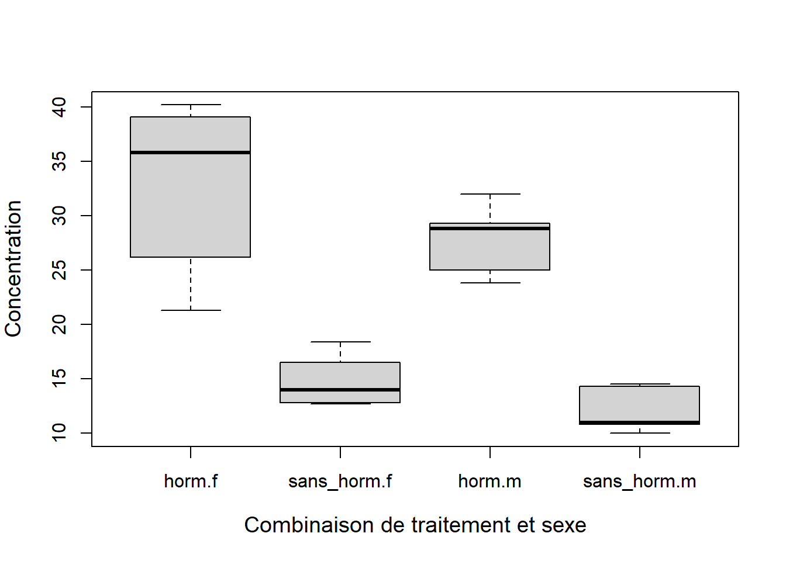
Figure 7.1: Diagramme de boîtes et moustaches avec les données de concentration en calcium en fonction du traitement hormonal et du sexe.
On peut déterminer le nombre d’observations pour chaque combinaison des deux facteurs à l’aide de la fonction table( ) :
##
## f m
## horm 5 5
## sans_horm 5 5On constate qu’il y a cinq observations pour chaque combinaison des niveaux des deux facteurs. Nous dirons donc qu’il y a cinq répétitions (replicates) par combinaison de traitements.
Calculons la somme des carrés totale :
##moyenne globale
y.bar <- mean(calcium$Concentration)
##SST
SST <- sum((calcium$Concentration - y.bar)^2)
SST## [1] 1827.697On peut ensuite calculer la somme des carrés des facteurs \(A\) et \(B\) :
##sous-jeu de données
fem <- calcium[calcium$Sexe == "f", ]
mal <- calcium[calcium$Sexe == "m", ]
horm <- calcium[calcium$Trait == "horm", ]
nohorm <- calcium[calcium$Trait == "sans_horm", ]
##moyenne des groupes
y.bar.f <- mean(fem$Concentration)
y.bar.m <- mean(mal$Concentration)
y.bar.horm <- mean(horm$Concentration)
y.bar.nohorm <- mean(nohorm$Concentration)
## Calcul de SSA
## où le nombre d'observations femelle et mâle est
nrow(fem)## [1] 10## [1] 10## [1] 70.3125## Calculer df.SSA. On a df.SSA<- a - 1
## où a est le nombre de groupes definis par le facteur A.
## Ici, il y a homme et femme, donc a = 2.
df.SSA <- 2 - 1
df.SSA## [1] 1## [1] 10## [1] 10## [1] 1386.112## Calculer df.SSB. On a df.SSB<- b - 1
## où b est le nombre de groupes définis par le facteur B.
## Ici, il y a traitement hormonal et pas
## de traitement, donc b = 2
df.SSB <- 2 - 1
df.SSB## [1] 1La somme des carrés des erreurs se calcule comme suit :
##sous-groupes en combinant les deux facteurs
f.horm <- calcium[calcium$Sexe == "f" & calcium$Trait == "horm", ]
m.horm <- calcium[calcium$Sexe == "m" & calcium$Trait == "horm", ]
f.nohorm <- calcium[calcium$Sexe == "f" & calcium$Trait == "sans_horm", ]
m.nohorm <- calcium[calcium$Sexe == "m" & calcium$Trait == "sans_horm", ]
##
##calculs des moyennes des combinaisons de groupes
y.bar.f.horm <- mean(f.horm$Concentration)
y.bar.m.horm <- mean(m.horm$Concentration)
y.bar.f.nohorm <- mean(f.nohorm$Concentration)
y.bar.m.nohorm <- mean(m.nohorm$Concentration)
##
## Calcul de SSE
SSE.f.horm <- sum((f.horm$Concentration - y.bar.f.horm)^2)
SSE.m.horm <- sum((m.horm$Concentration - y.bar.m.horm)^2)
SSE.f.nohorm <- sum((f.nohorm$Concentration - y.bar.f.nohorm)^2)
SSE.m.nohorm <- sum((m.nohorm$Concentration - y.bar.m.nohorm)^2)
SSE <- SSE.f.horm + SSE.m.horm + SSE.f.nohorm + SSE.m.nohorm
SSE## [1] 366.372##
## Cacul des degrés de liberté
## df.SSE = ab(n-1), où a et b sont le nombre de groupes
## du facteur A et B, respectivement,
## et n est le nombre d'observations pour chaque combinaison
## des facteurs A et B.
df.SSE <- length(levels(calcium$Sexe)) *
length(levels(calcium$Trait)) * (5 - 1)
df.SSE## [1] 16Finalement, on obtient la somme des carrés du terme d’interaction entre les deux facteurs. Notez que l’équation pour \(SSinter\) peut se décomposer de la façon suivante :
\[\begin{align*} SS_{\text{inter}} &= n \sum_{i=1}^a \sum_{j=1}^b (\bar{y}_{ij} - \bar{y}_i - \bar{y}_j + \bar{y})^2 \\ &= n \sum_{i=1}^a \left( (\bar{y}_{i.\text{horm}} - \bar{y}_i - \bar{y}_{\text{horm}} + \bar{y})^2 + (\bar{y}_{i.\text{nohorm}} - \bar{y}_i - \bar{y}_{\text{nohorm}} + \bar{y})^2 \right) \\ &= n \left( (\bar{y}_{f.\text{horm}} - \bar{y}_f - \bar{y}_{\text{horm}} + \bar{y})^2 \right. \\ &\quad + (\bar{y}_{f.\text{nohorm}} - \bar{y}_f - \bar{y}_{\text{nohorm}} + \bar{y})^2 \\ &\quad + (\bar{y}_{m.\text{horm}} - \bar{y}_m - \bar{y}_{\text{horm}} + \bar{y})^2 \\ &\quad \left. + (\bar{y}_{m.\text{nohorm}} - \bar{y}_m - \bar{y}_{\text{nohorm}} + \bar{y})^2 \right) \end{align*}\]
Ansi, nous calculons \(SSinter\) de la façon suivante :
## SS de l'interaction
SSInter.f.horm <- 5*sum((y.bar.f.horm - y.bar.f - y.bar.horm + y.bar)^2)
SSInter.m.horm <- 5*sum((y.bar.m.horm - y.bar.m - y.bar.horm + y.bar)^2)
SSInter.f.nohorm <- 5*sum((y.bar.f.nohorm - y.bar.f -
y.bar.nohorm + y.bar)^2)
SSInter.m.nohorm <- 5*sum((y.bar.m.nohorm - y.bar.m -
y.bar.nohorm + y.bar)^2)
SSInter <- SSInter.f.horm + SSInter.m.horm +
SSInter.f.nohorm + SSInter.m.nohorm
SSInter## [1] 4.9005## degrés de liberté de SSInter
## df.SSInter = (a-1)(b-1), où a et b correspondent aux
## nombre de groupes du facteur A et B, respectivement.
df.SSInter <- df.SSA * df.SSB
df.SSInter## [1] 1On peut réaliser tous ces calculs directement dans R à l’aide de la fonction aov( ) :
## Df Sum Sq Mean Sq F value Pr(>F)
## Sexe 1 70.3 70.3 3.071 0.0989 .
## Trait 1 1386.1 1386.1 60.534 7.94e-07 ***
## Sexe:Trait 1 4.9 4.9 0.214 0.6499
## Residuals 16 366.4 22.9
## ---
## Signif. codes: 0 '***' 0.001 '**' 0.01 '*' 0.05 '.' 0.1 ' ' 1On peut reconstituer ce même tableau à partir des calculs que nous avons effectués plus haut :
result <- data.frame(Df = c(df.SSA, df.SSB, df.SSInter, df.SSE),
Sum.Sq = c(SSA, SSB, SSInter, SSE))
result$Mean.Sq <- result$Sum.Sq/result$Df
result$F.value <- c(result$Mean.Sq[1]/result$Mean.Sq[4],
result$Mean.Sq[2]/result$Mean.Sq[4],
result$Mean.Sq[3]/result$Mean.Sq[4],
NA)
result$P.value <- c(1 - pf(result$F.value[1],
df1 = result$Df[1],
df2 = result$Df[4]),
1 - pf(result$F.value[2],
df1 = result$Df[2],
df2 = result$Df[4]),
1 - pf(result$F.value[3],
df1 = result$Df[3],
df2 = result$Df[4]),
NA)
##tableau identique à aov( )
result## Df Sum.Sq Mean.Sq F.value P.value
## 1 1 70.3125 70.31250 3.070650 9.885618e-02
## 2 1 1386.1125 1386.11250 60.533556 7.943078e-07
## 3 1 4.9005 4.90050 0.214012 6.498700e-01
## 4 16 366.3720 22.89825 NA NAAvant d’interpréter les résultats, on doit vérifier les suppositions du modèle. On vérifie les suppositions de l’ANOVA à deux critères avec les mêmes outils que pour l’ANOVA à un critère. On constate que les résidus suivent une distribution normale (Figure 7.2a):
##vérification de la normalité des résidus
par(mfrow = c(1, 2))
qqnorm(residuals(aov2),
main = "Normalité des résidus",
ylab = "Quantiles observés",
xlab = "Quantiles théoriques",
cex.lab = 1.2)
qqline(residuals(aov2))
text(x = -1.9, y = 7.5, labels = "a", cex = 1.2)
plot(residuals(aov2) ~ fitted(aov2),
xlab = "Valeurs prédites",
ylab = "Résidus",
cex.lab = 1.2)
text(x = 12.5, y = 7.5, labels = "b", cex = 1.2)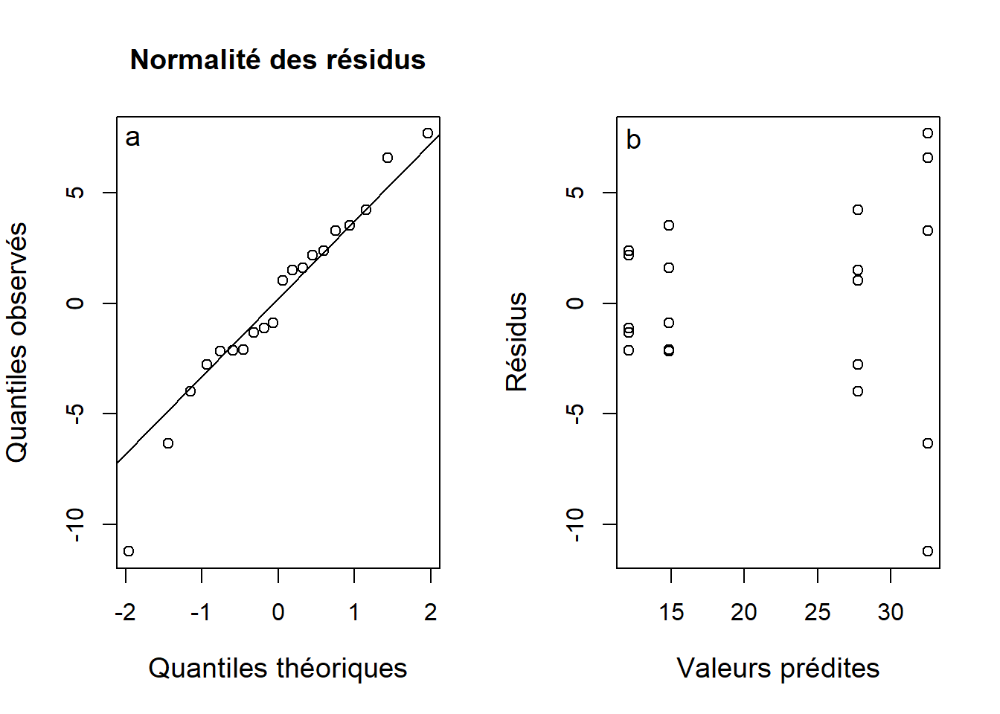
Figure 7.2: Graphique quantile-quantile évaluant la normalité des résidus (a) et le graphique des résidus en fonction des valeurs prédites pour diagnostiquer l’hétérogénéité de la variance (b) à partir de l’ANOVA à deux critères sur les données de concentration en calcium dans le plasma sanguin.
Le graphique des résidus en fonction des valeurs prédites présente des signes d’hétérogénéité de la variance (Figure 7.2b). En effet, le patron en forme d’entonnoir montre que la variance augmente avec les valeurs prédites. Par conséquent, on ne peut pas interpréter le tableau de l’ANOVA obtenu plus haut. Afin de corriger l’hétérogénéité de la variance, la transformation logarithmique s’avère souvent efficace. Essayons-la sur la concentration en calcium.
## Transformation log
calcium$log.concentration <- log(calcium$Concentration)
aov.log <- aov(log.concentration ~ Trait + Sexe + Trait:Sexe,
data = calcium)Produisons le nouveau graphique pour évaluer la normalité des résidus et l’hétérogénéité de la variace.
par(mfrow = c(1, 2))
qqnorm(residuals(aov.log),
ylab = "Quantiles observés",
xlab = "Quantiles prédits",
main = " ", cex.lab = 1.2)
qqline(residuals(aov.log))
text(x = 1.5, y = -0.35, labels = "a", cex = 1.2)
plot(residuals(aov.log) ~ fitted(aov.log),
ylab = "Résidus",
xlab = "Valeurs prédites",
cex.lab = 1.2)
text(x = 3.3, y = -0.35, labels = "b", cex = 1.2)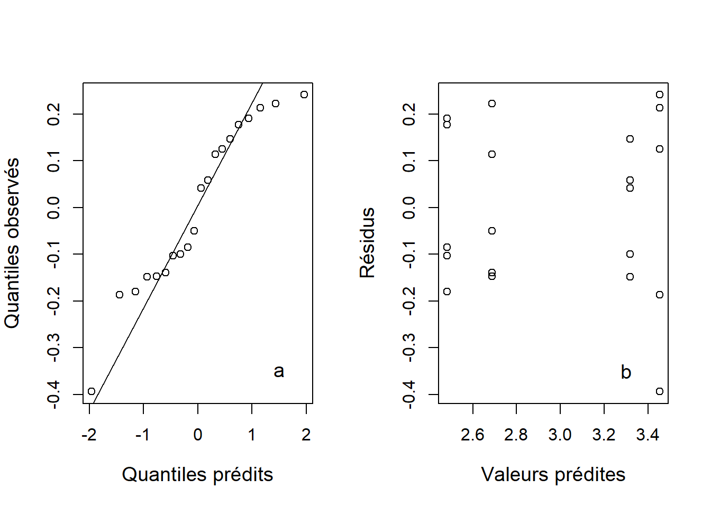
Figure 7.3: Graphique quantile-quantile (a) et résidus en fonction des valeurs prédites (b) de l’ANOVA à deux critères réalisée à partir des données de concentration de calcium log-transformées.
Les suppositions de normalité et d’homogénéité de la variance sont maintenant respectées (Figure 7.3).
Le tableau d’ANOVA réalisé à partir du logarithme de la concentration en calcium donne :
## Df Sum Sq Mean Sq F value Pr(>F)
## Trait 1 3.196 3.196 86.121 7.69e-08 ***
## Sexe 1 0.145 0.145 3.901 0.0658 .
## Trait:Sexe 1 0.007 0.007 0.176 0.6805
## Residuals 16 0.594 0.037
## ---
## Signif. codes: 0 '***' 0.001 '**' 0.01 '*' 0.05 '.' 0.1 ' ' 1Lorsqu’on effectue une analyse de variance à deux critères avec répétitions, on doit toujours vérifier en premier la signification du terme d’interaction. Ici, on remarque qu’il n’y a pas d’interaction entre les deux facteurs (). Par ailleurs, on remarque un effet marginal du sexe ()21 et un effet important du traitement hormonal sur le log de la concentration en calcium (\(F_{1, 16} = 86.12, P < 0.0001\)). L’effet de chaque facteur est indépendant de l’effet de l’autre, puisque l’ANOVA n’a pu démontrer que le terme d’interaction était statistiquement significatif.
Tout comme l’ANOVA à un critère, on peut poursuivre l’ANOVA à deux critères avec des comparaisons multiples afin de déterminer où se trouvent les différences lorsque nous avons rejeté \(H_0\)22.
## diff lwr upr p adj
## m-f -0.1701524 -0.3527725 0.01246759 0.06576033## diff lwr upr p adj
## sans_horm-horm -0.7994414 -0.9820614 -0.6168213 7.686578e-08Les comparaisons multiples basées sur le test de Tukey indiquent la même conclusion que le tableau d’ANOVA, puisque chaque facteur ne comporte ici que deux niveaux. Le log de la concentration en calcium du plasma sanguin des femelles est marginalement supérieur à celui des mâles (\(\bar{x}_{\mathrm{m\hat{a}les}} - \bar{x}_{\mathrm{femelles}} = -0.17, P = 0.0658\)). En ce qui concerne le facteur du traitement hormonal, on constate que le groupe avec traitement hormonal est supérieur à celui du groupe sans traitement hormonal (\(\bar{x}_{\mathrm{sans\_horm}} - \bar{x}_{\mathrm{horm}} = -0.799, P < 0.0001\)).
On peut aussi illustrer les résultats à l’aide d’un graphique en représentant les moyennes de chaque groupe \(\pm\) un intervalle de confiance à 95 %. Tout d’abord produisons un graphique sur une échelle logarithmique.
## Sexe - moyenne des groupes
## valeurs pour lesquelles faire des prédictions
## On commence par créer un tableau dans lequel
## chaque ligne correspond à une combinaison des facteurs A et B.
pred.set <- expand.grid(Sexe = c("m", "f"),
Trait = c("sans_horm", "horm"))
## La fonction predict nous donne les valeurs prédites par l’ANOVA
sex.means <- predict(aov.log, newdata = pred.set, se.fit = TRUE)
## Ajout des prédictions dans le jeu de données
pred.set$fit <- sex.means$fit
pred.set$se.fit <- sex.means$se.fit
##IC à 95%
## On détermine l’intervalle de confiance pour
## construire nos barres d’erreur
## Rappelons que l’intervalle de confiance est donné par :
## (IC.inf, IC.sup) (voir leçon 2)
## IC.inf = x.bar + qt(p=0.025, df)*SE
## IC.sup = x.bar - qt(p=0.025, df)*SE
pred.set$low95 <- pred.set$fit +
qt(p = 0.025, df = aov.log$df.residual) * pred.set$se.fit
pred.set$upp95 <- pred.set$fit -
qt(p = 0.025, df = aov.log$df.residual) * pred.set$se.fit
pred.set
##créer le graphique
plot(y = 0, x = 0,
ylab = "Log de la concentration en calcium",
xlab = "Traitement",
ylim = c(min(pred.set$low95), max(pred.set$upp95)),
cex.lab = 2,
xlim = c(0, 3),
type = "n",
cex.axis = 2,
xaxt = "n",
main = "Moyennes ± IC 95 % (échelle log)",
cex.main = 2)
##ajout de l'axe des x's
axis(side = 1,
at = c(1, 2),
labels = c("sans horm", "horm"),
cex.axis = 2)
##ajout des points pour mâles
points(y = pred.set$fit[c(1,3)],
x = c(0.9, 1.9),
pch = 1,
cex = 2)
##ajout des points pour femelles
points(y = pred.set$fit[c(2,4)],
x = c(1.1, 2.1),
pch = 2,
cex = 2)
##barres d'erreurs pour mâles
arrows(x0 = c(0.9, 1.9),
y0 = pred.set$low95[c(1, 3)],
y1 = pred.set$upp95[c(1, 3)],
x1 = c(0.9, 1.9),
angle = 90,
code = 3,
length = 0.05)
##barres d'erreurs pour femelles
arrows(x0 = c(1.1, 2.1),
y0 = pred.set$low95[c(2, 4)],
y1 = pred.set$upp95[c(2, 4)],
x1 = c(1.1, 2.1),
angle = 90,
code = 3,
length = 0.05)
##ajouter légende
legend(x = "topleft",
legend = c("mâles", "femelles"),
pch = c(1, 2))
text(x = 2.8, y = 2.3, labels = "a", cex = 2)## Sexe Trait fit se.fit low95 upp95
## 1 m sans_horm 2.482887 0.08614538 2.300267 2.665507
## 2 f sans_horm 2.689163 0.08614538 2.506543 2.871783
## 3 m horm 3.318452 0.08614538 3.135832 3.501072
## 4 f horm 3.452481 0.08614538 3.269861 3.635101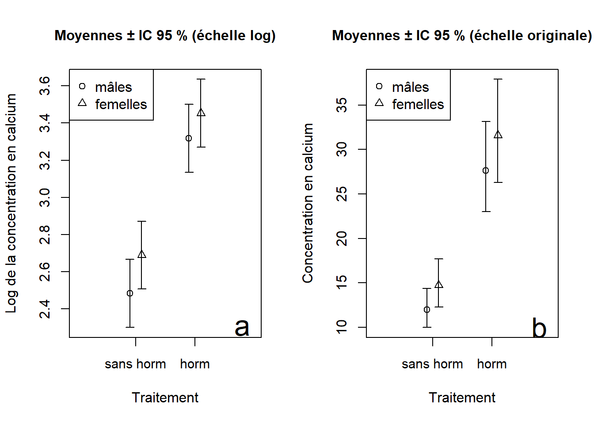
Figure 7.4: Résultats de l’ANOVA à deux critères présentés sur l’échelle logarithmique (a) et sur l’échelle originale de la variable réponse (b).
Le graphique sur l’échelle logarithmique (Figure 7.4a) montre clairement que les effets sont additifs (pas d’effet d’interaction), puisque la distance entre le cercle et le triangle du traitement hormonal est la même que celle entre les deux symboles du traitement sans hormone.
Il est aussi approprié de présenter les résultats sur l’échelle originale de la variable réponse en effectuant l’opération inverse du logarithme naturel (c.-à-d., exp( )) sur la moyenne et sur les bornes inférieures et supérieures des intervalles de confiance.
## On prend l’exponentiel pour convertir les données
## transformées par le logarithme.
pred.set$orig.fit <- exp(pred.set$fit)
pred.set$orig.low95 <- exp(pred.set$low95)
pred.set$orig.upp95 <- exp(pred.set$upp95)
##créer graphique
plot(y = 0, x = 0,
ylab = "Concentration en calcium",
xlab = "Traitement",
cex.lab = 2,
ylim = c(min(pred.set$orig.low95), max(pred.set$orig.upp95)),
xlim = c(0, 3),
type = "n",
cex.axis = 2,
xaxt = "n",
main = "Moyennes ± IC 95 % (échelle originale)",
cex.main = 2)
##ajout de l'axe des x's
axis(side = 1,
at = c(1, 2),
labels = c("sans horm", "horm"),
cex.axis = 2)
##ajout des points pour mâles
points(y = pred.set$orig.fit[c(1,3)],
x = c(0.9, 1.9),
pch = 1,
cex = 2)
##ajout des points pour femelles
points(y = pred.set$orig.fit[c(2,4)],
x = c(1.1, 2.1),
pch = 2,
cex = 2)
##barres d'erreurs pour mâles
arrows(x0 = c(0.9, 1.9),
y0 = pred.set$orig.low95[c(1, 3)],
y1 = pred.set$orig.upp95[c(1, 3)],
x1 = c(0.9, 1.9),
angle = 90,
code = 3,
length = 0.05)
##barres d'erreurs pour femelles
arrows(x0 = c(1.1, 2.1),
y0 = pred.set$orig.low95[c(2, 4)],
y1 = pred.set$orig.upp95[c(2, 4)],
x1 = c(1.1, 2.1),
angle = 90,
code = 3,
length = 0.05)
text(x = 2.8,
y = 10,
labels = "b",
cex = 2)
##ajouter légende
legend(x = "topleft",
legend = c("mâles", "femelles"),
pch = c(1, 2),
cex = 2)En l’absence d’une interaction statistiquement significative (comme dans cet exemple), on présente les résultats séparément pour chaque facteur (Figure 7.5). On voit à la Figure 7.5 que la concentration de calcium du groupe sans traitement hormonal est bien inférieure à celle du groupe avec traitement hormonal, alors que les différences entre mâles et femelles sont beaucoup moins marquées.
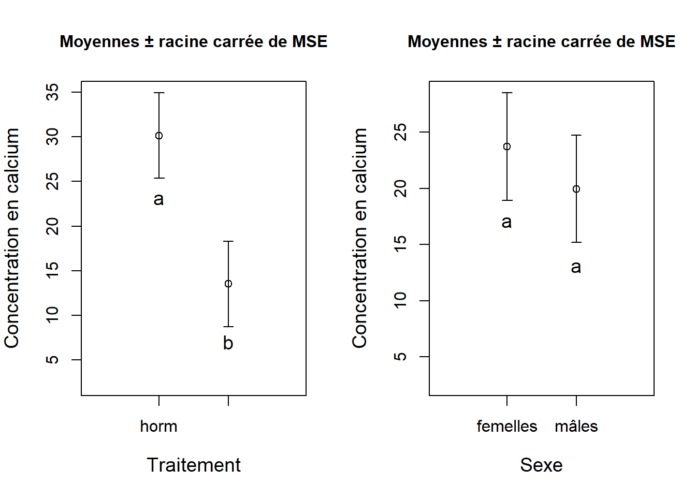
Figure 7.5: Résultats présentés séparément pour chaque facteur de l’ANOVA à deux critères présentés sur l’échelle d’origine. Les groupes qui ont les mêmes lettres ne diffèrent pas entre eux pour un facteur donné et avec un seuil de d’effet significatif \(\alpha\) < 0.05.
7.1.5 Effets additifs
Dans l’exemple précédent, on remarque que l’effet du premier facteur est indépendant de l’effet du deuxième facteur. En d’autres mots, la différence entre les mâles et les femelles est constante, peu importe le traitement hormonal. En l’absence d’une interaction statistiquement significative entre les deux facteurs, nous dirons que les effets des facteurs sont additifs. C’est ce qu’on entend par l’additivité des facteurs. En contrepartie, la présence d’une interaction significative entre les facteurs complique l’interprétation des résultats de l’expérimentation. Effectivement, la présence d’une interaction permet d’identifier des phénomènes souvent plus intéressants scientifiquement que s’il n’y avait pas d’interaction entre les facteurs. C’est ce que nous constaterons dans certains des exemples suivants.
Nous désirons déterminer l’effet du type de moulée (avoine, blé ou orge) et du type de supplément alimentaire (agrimore, control, supergain et supersupp) sur le gain en masse en kg de bétail après 6 semaines. Les données sont stockées dans le fichier croissance.csv23.
## importation avec séparateur virgule car ici les champs sont séparés par des virgules
croissance <- read.table("Module_7/data/croissance.csv", header = TRUE, sep = ",")
head(croissance)## Supplement Diete Gain
## 1 supergain ble 17.37125
## 2 supergain ble 16.81489
## 3 supergain ble 18.08184
## 4 supergain ble 15.78175
## 5 control ble 17.70656
## 6 control ble 18.22717## la fonction str() affiche la structure interne du tableau C’est une fonction alternative à summary()
str(croissance)## 'data.frame': 48 obs. of 3 variables:
## $ Supplement: chr "supergain" "supergain" "supergain" "supergain" ...
## $ Diete : chr "ble" "ble" "ble" "ble" ...
## $ Gain : num 17.4 16.8 18.1 15.8 17.7 ...## comparer avec importation sans sep = ','
crois2 <- read.table("Module_7/data/croissance.csv", header = TRUE)
head(crois2)## Supplement X..Diete...Gain.
## 1 supergain ,"ble",17.37125111
## 2 supergain ,"ble",16.81488903
## 3 supergain ,"ble",18.0818374
## 4 supergain ,"ble",15.78174829
## 5 control ,"ble",17.70656456
## 6 control ,"ble",18.22716932## on remarque un problème à l'importation les étiquettes des variables et les valeurs sont erronées
str(crois2)## 'data.frame': 48 obs. of 2 variables:
## $ Supplement : chr "supergain" "supergain" "supergain" "supergain" ...
## $ X..Diete...Gain.: chr ",\"ble\",17.37125111" ",\"ble\",16.81488903" ",\"ble\",18.0818374" ",\"ble\",15.78174829" ...## transformer en facteurs les variables en caracteres
croissance$Supplement <- as.factor(croissance$Supplement)
croissance$Diete <- as.factor(croissance$Diete)On vérifie le nombre de répétitions pour chaque combinaison des deux facteurs :
##
## avoine ble orge
## agrimore 4 4 4
## control 4 4 4
## supergain 4 4 4
## supersupp 4 4 4Nous disposons de quatre répétitions pour chaque combinaison de facteurs. Ainsi, nous pourrons inclure un terme d’interaction dans l’ANOVA à deux facteurs. Avant de lancer l’analyse, on peut jeter un coup d’oeil aux données brutes à l’aide d’un diagramme de boîtes et moustaches (Figure 7.6).
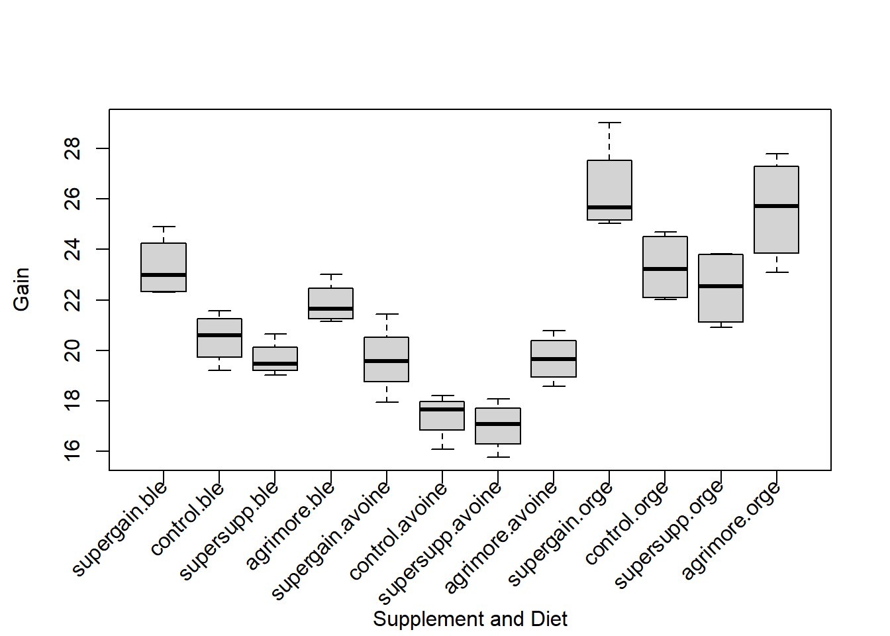
Figure 7.6: Diagramme de boîtes et moustaches présentant les données de gain de masse en fonction du type de moulée (Diete) et de supplément (Supplement).
Calculons maintenant l’ANOVA :
aov.crois <- aov(Gain ~ Supplement + Diete + Supplement:Diete,
data = croissance)
summary(aov.crois)## Df Sum Sq Mean Sq F value Pr(>F)
## Supplement 3 91.88 30.63 17.82 2.95e-07 ***
## Diete 2 287.17 143.59 83.52 3.00e-14 ***
## Supplement:Diete 6 3.41 0.57 0.33 0.917
## Residuals 36 61.89 1.72
## ---
## Signif. codes: 0 '***' 0.001 '**' 0.01 '*' 0.05 '.' 0.1 ' ' 1Avant d’interpréter les résultats, on vérifie les suppositions du modèle.
par(mfrow = c(1, 2))
##Vérification de la normalité des résidus
qqnorm(residuals(aov.crois),
ylab = "Quantiles observés",
xlab = "Quantiles théoriques",
main = "Graphique quantile-quantile",
cex.lab = 1.2)
qqline(residuals(aov.crois))
##Vérification de l'homogénéité de la variance
plot(residuals(aov.crois) ~ fitted(aov.crois),
ylab = "Résidus",
xlab = "Valeurs prédites",
main = expression(paste(bold(Résidus), " ", bold(italic(vs)), " ",
bold(valeurs), " ", bold(prédites))),
cex.lab = 1.2)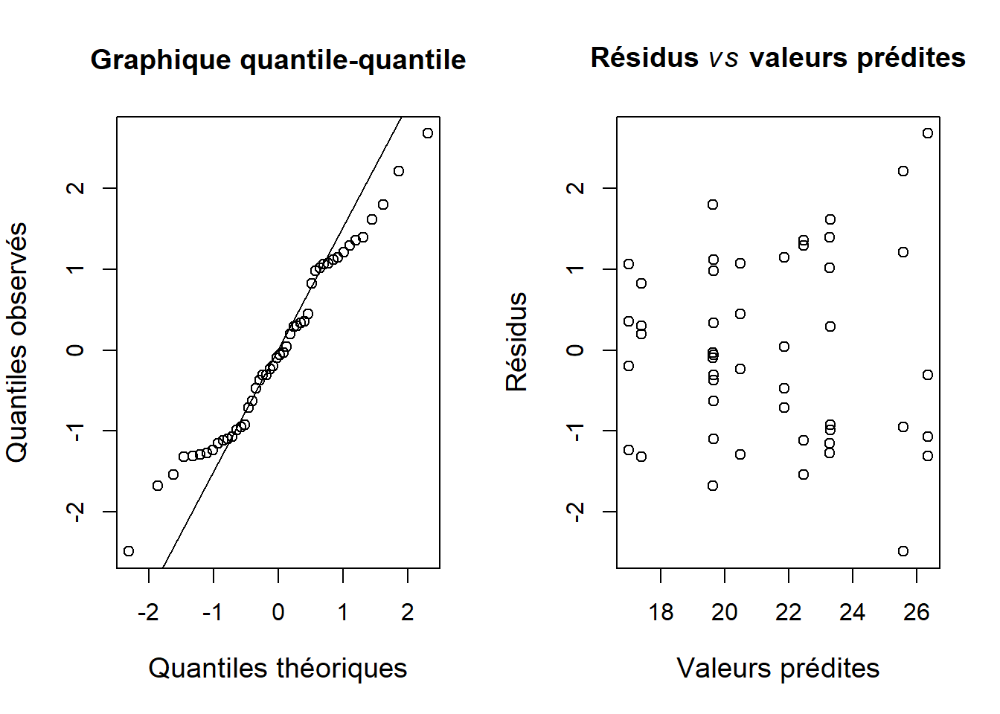
Figure 7.7: Vérification des suppositions de l’ANOVA à deux critères.
Nous remarquons que les résidus sur le graphique suivent généralement une distribution normale et qu’à l’exception de trois observations, l’homogénéité des variances est respectée (Figure 7.7). Nous pouvons donc procéder à l’interprétation des résultats.
Le type de supplément et le type de moulée ont tous deux un effet important sur le gain de masse (supplément: \(F_{3, 36} = 17.81, P < 0.0001\); type de moulée: \(F_{2, 36} = 83.52, P < 0.0001\)). Toutefois, il n’y aucune preuve d’une interaction entre les deux facteurs (\(F_{6, 36} = 0.33, P = 0.92\)). On peut donc conclure que les effets sont additifs. Les comparaisons multiples suggèrent des différences entre certains groupes de chaque facteur :
##On test d’abord les interactions entre les suppléments
tapply(X = croissance$Gain, INDEX = croissance$Supplement,
FUN = mean)## agrimore control supergain supersupp
## 23.09531 20.39861 19.71385 22.36796## diff lwr upr p adj
## control-agrimore -2.6967005 -4.138342 -1.2550592 7.641492e-05
## supergain-agrimore -3.3814586 -4.823100 -1.9398173 1.534370e-06
## supersupp-agrimore -0.7273521 -2.168993 0.7142892 5.326710e-01
## supergain-control -0.6847581 -2.126399 0.7568832 5.817637e-01
## supersupp-control 1.9693484 0.527707 3.4109897 4.053368e-03
## supersupp-supergain 2.6541065 1.212465 4.0957478 9.722472e-05##On test les interactions entre les diètes
tapply(X = croissance$Gain, INDEX = croissance$Diete,
FUN = mean)## avoine ble orge
## 21.32882 18.43134 24.42164## diff lwr upr p adj
## ble-avoine -2.897481 -4.030582 -1.764379 9.530072e-07
## orge-avoine 3.092817 1.959715 4.225918 2.634600e-07
## orge-ble 5.990298 4.857196 7.123399 0.000000e+00On peut représenter les résultats des comparaisons multiples comme suit pour le type de supplément :
| supergain | control | supersupp | agrimore |
|---|---|---|---|
| 19.714 | 20.399 | 22.368 | 23.005 |
On peut représenter les résultats des comparaisons multiples comme suit pour le type de moulée (Diete) :
| blé | avoine | orge |
|---|---|---|
| 18.431 | 21.329 | 24.422 |
La figure 7.8 illustre les résultats.
par(mfrow = c(1, 2))
##supplement
supp.means <- tapply(X = croissance$Gain,
INDEX = croissance$Supplement, FUN = mean)
supp <- data.frame(supp.means, MSE = 1.719)
supp$RMSE <- sqrt(supp$MSE)
supp$low <- supp$supp.means - supp$RMSE
supp$upp <- supp$supp.means + supp$RMSE
##diete
diet.means <- tapply(X = croissance$Gain,
INDEX = croissance$Diet, FUN = mean)
diet <- data.frame(diet.means, MSE = 1.719)
diet$RMSE <- sqrt(diet$MSE)
diet$low <- diet$diet.means - diet$RMSE
diet$upp <- diet$diet.means + diet$RMSE
##créer graphique
plot(y = 0, x = 0,
ylab = "Gain de masse (kg)",
xlab = "Supplément",
ylim = c(18, max(supp$upp)),
xlim = c(0, 5),
type = "n",
cex.lab = 1.2,
xaxt = "n",
main = "Moyennes ± racine carrée de MSE")
##ajout de l'axe des x's
axis(side = 1,
at = c(1, 2, 3, 4),
labels = c("agri", "cont", "sgain", "ssupp"),
cex.axis = 0.85)
##ajout des points pour l'ensemble des cereales
points(y = supp$supp.means, x = 1:4, pch = 1)
##barres d'erreurs
arrows(x0 = 1:4,
y0 = supp$low,
y1 = supp$upp,
x1 = 1:4,
angle = 90,
code = 3,
length = 0.05)
##groups
text(x = 2, y = 18.93, labels = "a", cex = 1.2)
text(x = 3, y = 18.25, labels = "a", cex = 1.2)
text(x = 1, y = 21.61, labels = "b", cex = 1.2)
text(x = 4, y = 20.89, labels = "b", cex = 1.2)
##créer graphique
plot(y = 0, x = 0,
ylab = "Gain de masse (kg)",
xlab = "Diète",
ylim = c(16, max(diet$upp)),
xlim = c(0, 4),
type = "n",
cex.lab = 1.2,
xaxt = "n",
main = "Moyennes ± racine carrée de MSE")
##ajout de l'axe des x's
axis(side = 1,
at = c(1, 2, 3),
labels = c("avoine", "blé", "orge"),
cex = 1.2)
##ajout des points pour blé
points(y = diet$diet.means, x = 1:3, pch = 1)
##barres d'erreurs
arrows(x0 = 1:3,
y0 = diet$low,
y1 = diet$upp,
x1 = 1:3,
angle = 90,
code = 3,
length = 0.05)
##groups
text(x = 1, y = 19.7, labels = "a", cex = 1.2)
text(x = 2, y = 16.8, labels = "b", cex = 1.2)
text(x = 3, y = 22.8, labels = "c", cex = 1.2)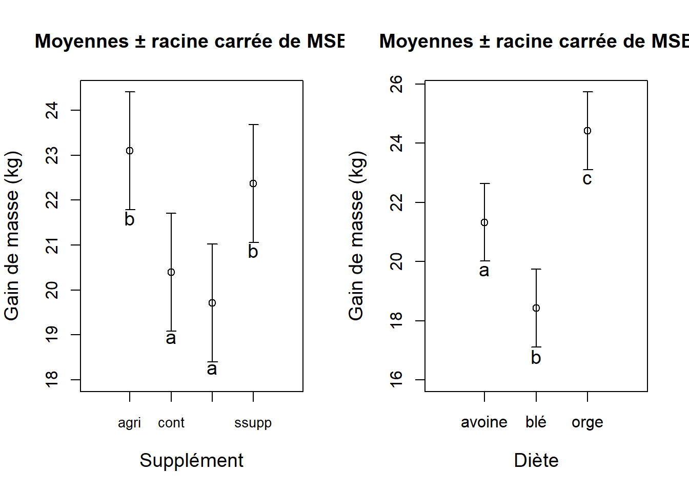
Figure 7.8: Graphique des effets du type de supplément alimentaire ( exttt{Supplement}) et du type de moulée ( exttt{Diete}) sur le gain de masse en kilogrammes.
Comme dernier exemple, nous analyserons l’effet de la concentration d’un antibiotique et de l’humidité sur la croissance d’une espèce de bactéries que l’on peut cultiver en laboratoire dans des plats de Pétri contenant un substrat de sucres appelé agar-agar. La variable réponse ici est la surface du substrat couverte par les colonies de bactérie mesurée en mm\(^2\). Le fichier antibio.txt contient les données.
## Surface Humidite Concentration
## 1 2.103529 sec faible
## 2 2.732448 sec faible
## 3 1.864153 sec faible
## 4 2.358879 sec faible
## 5 2.195207 sec faible
## 6 1.897846 sec moderee##
## elevee faible moderee
## humide 5 5 5
## sec 5 5 5On présente les données par un diagramme de boîtes et moustaches (Figure 7.9).
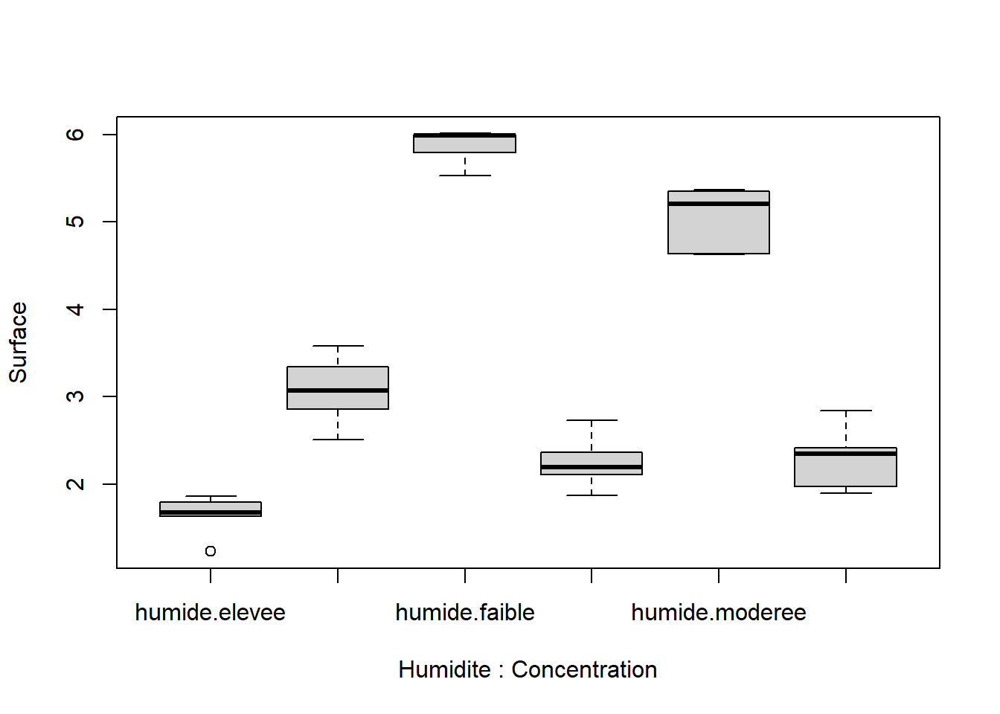
Figure 7.9: Diagramme de boîtes et moustaches de la surface couverte en mm\(^2\) en fonction de la concentration d’un antibiotique et de l’humidité.
On vérifie ensuite les suppositions d’homogénéité des variances et de normalités des résidus. On remarque que celles sont respectées (fig. 7.10).
On réalise maintenant l’ANOVA à deux critères :
aov.antibio <- aov(Surface ~ Humidite + Concentration +
Humidite:Concentration,
data = antibio)
summary(aov.antibio)## Df Sum Sq Mean Sq F value Pr(>F)
## Humidite 1 20.23 20.228 181.6 1.09e-12 ***
## Concentration 2 15.93 7.965 71.5 7.76e-11 ***
## Humidite:Concentration 2 36.40 18.199 163.4 1.05e-14 ***
## Residuals 24 2.67 0.111
## ---
## Signif. codes: 0 '***' 0.001 '**' 0.01 '*' 0.05 '.' 0.1 ' ' 1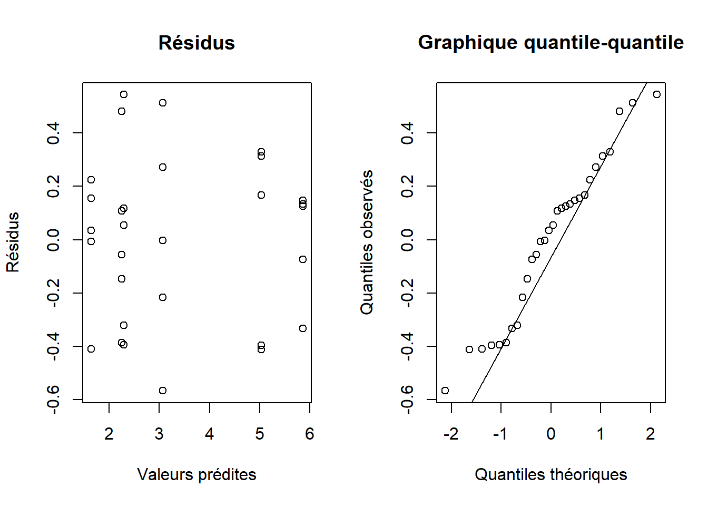
Figure 7.10: Homogénéité des variances et normalité des résidus de l’ANOVA à deux critères réalisées sur les données d’activité bactérienne (surface couverte par les colonies de bactéries).
Le tableau d’ANOVA montre une interaction importante entre les facteurs Humidite et Concentration (\(F_{2, 24} = 163.4, P < 0.0001\)). Les effets de la concentration d’antibiotique et de l’humidité ne sont pas additifs. Ceci implique que nous ne pouvons pas interpréter ces effets séparément, car l’effet d’un facteur dépend du niveau de l’autre facteur. Nous pouvons utiliser les comparaisons multiples pour trouver les différences entre les groupes définis par les différentes combinaisons des deux facteurs.
## elevee faible moderee
## humide 1.637384 5.865661 5.036441
## sec 3.069767 2.250843 2.292084mult.inter <- TukeyHSD(aov.antibio, which = "Humidite:Concentration")
mult.inter$'Humidite:Concentration'## diff lwr upr p adj
## sec:elevee-humide:elevee 1.43238312 0.779715574 2.0850507 6.988460e-06
## humide:faible-humide:elevee 4.22827694 3.575609401 4.8809445 2.331468e-14
## sec:faible-humide:elevee 0.61345927 -0.039208277 1.2661268 7.400734e-02
## humide:moderee-humide:elevee 3.39905706 2.746389512 4.0517246 3.608225e-13
## sec:moderee-humide:elevee 0.65470026 0.002032716 1.3073678 4.897318e-02
## humide:faible-sec:elevee 2.79589383 2.143226283 3.4485614 2.259004e-11
## sec:faible-sec:elevee -0.81892385 -1.471591395 -0.1662563 8.269047e-03
## humide:moderee-sec:elevee 1.96667394 1.314006394 2.6193415 2.716546e-08
## sec:moderee-sec:elevee -0.77768286 -1.430350402 -0.1250153 1.312775e-02
## sec:faible-humide:faible -3.61481768 -4.267485222 -2.9621501 1.112443e-13
## humide:moderee-humide:faible -0.82921989 -1.481887432 -0.1765523 7.359216e-03
## sec:moderee-humide:faible -3.57357668 -4.226244229 -2.9209091 1.366685e-13
## humide:moderee-sec:faible 2.78559779 2.132930246 3.4382653 2.443656e-11
## sec:moderee-sec:faible 0.04124099 -0.611426550 0.6939085 9.999549e-01
## sec:moderee-humide:moderee -2.74435680 -3.397024340 -2.0916893 3.354361e-11Les comparaisons multiples suggèrent les groupes suivants :
| humide-élevée | sec-faible | sec-modérée | sec-élevée | humide-modérée | humide-faible |
|---|---|---|---|---|---|
| 1.64 mm2 | 2.25 mm2 | 2.29 mm2 | 3.07 mm2 | 5.04 mm2 | 5.87 mm2 |
Représentons maintenant les résultats graphiquement.
##valeurs prédites
pred.out <- expand.grid(Humidite = c("sec", "humide"),
Concentration = c("faible", "moderee", "elevee"))
preds <- predict(aov.antibio, newdata = pred.out, se.fit = TRUE)
pred.out$mean <- preds$fit
pred.out$se <- preds$se.fit
##IC à 95%
pred.out$low95 <- pred.out$mean +
qt(p = 0.025, df = aov.antibio$df.residual) * pred.out$se
pred.out$upp95 <- pred.out$mean -
qt(p = 0.025, df = aov.antibio$df.residual) * pred.out$se
##graphique
plot(y = 0, x = 0,
ylab = "",
xlab = "Concentration d'antibiotique",
ylim = c(1, max(pred.out$upp95)),
xlim = c(0, 4),
type = "n",
cex.lab = 1.2,
xaxt = "n",
main = "Moyennes ± IC à 95 %")
##ajout d'étiquette en marge
##expression permet d'ajouter des lettres grecques,
##indices ou exposants
mtext(text = expression(paste("Surface (", mm^2, ")")),
side = 2,
line = 2,
cex = 1.2)
##ajout de l'axe des x's
axis(side = 1,
at = c(1, 2, 3),
labels = c("faible", "modérée", "élevée"),
cex = 1.2)
##points pour sec
points(y = pred.out$mean[c(1, 3, 5)], x = 1:3, pch = 1)
##barres d'erreurs
arrows(x0 = 1:3,
y0 = pred.out$low95[c(1, 3, 5)],
y1 = pred.out$upp95[c(1, 3, 5)],
x1 = 1:3,
angle = 90,
code = 3,
length = 0.05)
##points pour humide
points(y = pred.out$mean[c(2, 4, 6)], x = 1:3, pch = 2)
##barres d'erreurs
arrows(x0 = 1:3,
y0 = pred.out$low95[c(2, 4, 6)],
y1 = pred.out$upp95[c(2, 4, 6)],
x1 = 1:3,
angle = 90,
code = 3,
length = 0.05)
##légende
legend(x = "topright",
pch = c(1, 2),
legend = c("sec", "humide"),
title = "Humidité")
##groupes
text(x = 1, y = 5.4, labels = "a", cex = 1.2)
text(x = 2, y = 4.6, labels = "b", cex = 1.2)
text(x = 3, y = 1.2, labels = "c", cex = 1.2)
text(x = 1, y = 1.82, labels = "cd", cex = 1.2)
text(x = 2, y = 1.87, labels = "d", cex = 1.2)
text(x = 3, y = 2.6, labels = "e", cex = 1.2)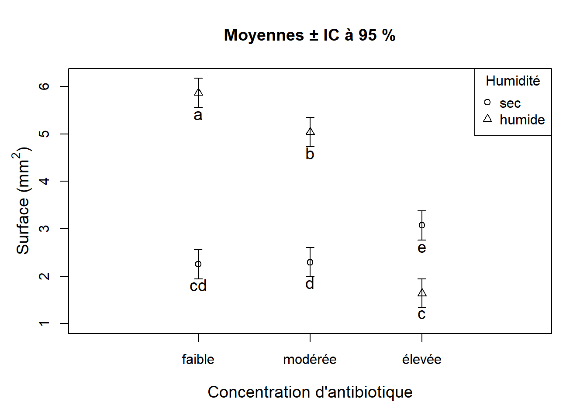
Figure 7.11: Interaction significative entre l’humidité et la concentration d’antibiotique sur l’activité bactérienne.
La Figure 7.11 montre qu’il y a bien une interaction entre les deux facteurs. Nous voyons clairement que la différence entre la moyenne du groupe “sec” et celle du groupe “humide” varie énormément avec la concentration d’antibiotique, et que cette différence est la plus faible quand la concentration d’antibiotique est élevée.
On remarque qu’il y a une inversion des différences entre les groupes “sec” et les groupes “humide” : la surface couverte moyenne du groupe “humide” est supérieure à celle du groupe “sec” aux concentrations faible et modérée d’antibitioque. Toutefois, le groupe “sec” a une plus grande surface couverte moyenne que le groupe “humide” à la concentration élevée d’antibiotique. On conclut que l’augmentation de la concentration de l’antibiotique réduit l’activité bactérienne sous des conditions humides, mais augmente l’activité bactérienne en conditions plus sèches.
7.1.6 Conclusion
Dans ce texte, vous vous êtes familiarisés avec l’ANOVA à deux critères avec plusieurs répétitions par groupe aux traitements combinés, et particulièrement avec les concepts d’interaction et d’additivité. Trois exemples ont été présentés afin d’illustrer les différentes étapes de l’analyse, de la vérification des suppositions, de l’interprétation et de la présentation graphique des résultats. Nous avons vu qu’en présence d’une interaction entre deux facteurs, on ne peut pas interpréter les effets principaux, car l’effet d’un facteur sur la variable réponse dépend du niveau de l’autre. On dit dans ce cas que les effets ne sont pas additifs. C’est justement ce qu’illustre le dernier exemple sur l’activité bactérienne: l’augmentation de la concentration d’antibiotique n’avait pas le même effet selon le niveau d’humidité du milieu. Le concept d’interaction est important et il est souvent associé à des hypothèses intéressantes en sciences. Nous vous encourageons à revoir les exemples afin de bien saisir la notion d’interaction, car nous l’étudierons à nouveau dans les leçons à venir.
Les résultats de l’ANOVA montrent que la probabilité associée au facteur sexe est suffisamment près du seuil de 0.05 pour que l’effet soit considéré biologiquement significatif. Pour cette raison, on peut retenir ce facteur dans les comparaisons multiples.↩︎
À noter que dans notre exemple, il n’y a que deux niveaux (groupes) à chaque facteur: sexe a deux niveaux (mâle, femelle), et traitement hormonal n’a que deux niveaux (avec traitement, sans traitement). Ainsi, il ne serait pas absolument nécessaire de poursuivre avec des comparaisons multiples, car si on rejette \(H_0\), on sait que les deux groupes diffèrent entre eux.↩︎
Le fichier
csvest un type de fichier de texte standard où chaque élément est séparé le plus souvent par une virgule, un espace ou une point-virgule. Ce format s’importe dans R à l’aide deread.table( )puisque c’est un fichier de texte, en modifiant la valeur de l’argumentdelim.↩︎